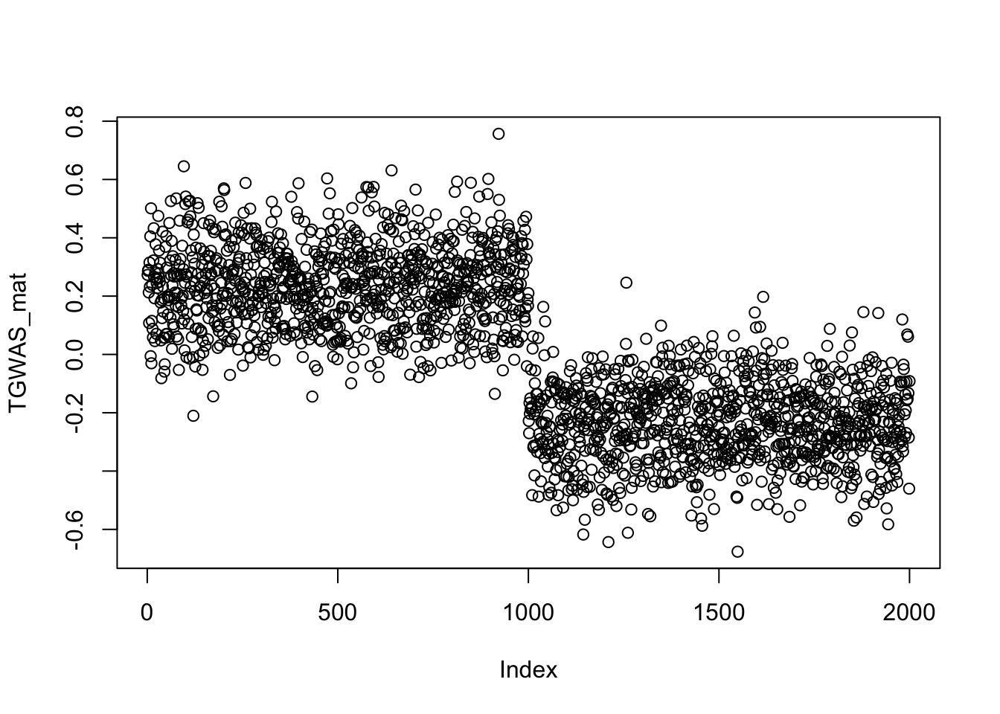
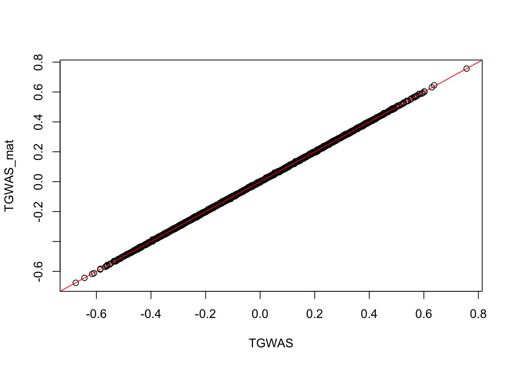

Last updated: 2022-04-26
Checks: 5 2
Knit directory: polygenic_adaptation_stratification/analysis/
This reproducible R Markdown analysis was created with workflowr (version 1.6.2). The Checks tab describes the reproducibility checks that were applied when the results were created. The Past versions tab lists the development history.
The R Markdown is untracked by Git. To know which version of the R Markdown file created these results, you’ll want to first commit it to the Git repo. If you’re still working on the analysis, you can ignore this warning. When you’re finished, you can run wflow_publish to commit the R Markdown file and build the HTML.
Great job! The global environment was empty. Objects defined in the global environment can affect the analysis in your R Markdown file in unknown ways. For reproduciblity it’s best to always run the code in an empty environment.
The command set.seed(20201015) was run prior to running the code in the R Markdown file. Setting a seed ensures that any results that rely on randomness, e.g. subsampling or permutations, are reproducible.
Great job! Recording the operating system, R version, and package versions is critical for reproducibility.
To ensure reproducibility of the results, delete the cache directory Calculate_TGWAS_cache and re-run the analysis. To have workflowr automatically delete the cache directory prior to building the file, set delete_cache = TRUE when running wflow_build() or wflow_publish().
Great job! Using relative paths to the files within your workflowr project makes it easier to run your code on other machines.
Great! You are using Git for version control. Tracking code development and connecting the code version to the results is critical for reproducibility.
The results in this page were generated with repository version 931f818. See the Past versions tab to see a history of the changes made to the R Markdown and HTML files.
Note that you need to be careful to ensure that all relevant files for the analysis have been committed to Git prior to generating the results (you can use wflow_publish or wflow_git_commit). workflowr only checks the R Markdown file, but you know if there are other scripts or data files that it depends on. Below is the status of the Git repository when the results were generated:
Ignored files:
Ignored: .DS_Store
Ignored: .Rhistory
Ignored: .Rproj.user/
Ignored: .snakemake/
Ignored: analysis/Calculate_TGWAS_cache/
Ignored: code/.DS_Store
Ignored: code/1kg/.DS_Store
Ignored: code/Calculate_Tm/.DS_Store
Ignored: code/Debug/.DS_Store
Ignored: code/PGA_test/.DS_Store
Ignored: code/PRS/.DS_Store
Ignored: code/Simulate_Genotypes/.DS_Store
Ignored: code/Simulate_Phenotypes/.DS_Store
Ignored: code/Snakefiles/.DS_Store
Ignored: code/Snakefiles/4PopSplit/.DS_Store
Ignored: data/.DS_Store
Ignored: data/1kg/
Ignored: data/cgd_example/
Ignored: data/projection_example/
Ignored: data/proof/
Ignored: output/.DS_Store
Ignored: output/Calculate_TGWAS/
Ignored: output/Calculate_Tm/4PopSplit/A10/
Ignored: output/Calculate_Tm/4PopSplit/A2/
Ignored: output/Calculate_Tm/4PopSplit/B1/
Ignored: output/Calculate_Tm/4PopSplit/E2/
Ignored: output/Calculate_Tm/4PopSplit/E20/
Ignored: output/Calculate_Tm/4PopSplit/E3/
Ignored: output/Calculate_Tm/4PopSplit/E4/
Ignored: output/Calculate_Tm/4PopSplit/E5/
Ignored: output/Calculate_Tm/4PopSplit/E6/
Ignored: output/Calculate_Tm/4PopSplit/E7/
Ignored: output/Calculate_Tm/4PopSplit/E8/
Ignored: output/Calculate_Tm/4PopSplit/E9/
Ignored: output/Calculate_Tm/SimpleGrid/A1/
Ignored: output/Calculate_Tm/SimpleGrid/B1/
Ignored: output/Calculate_Tm/SimpleGrid/E1/
Ignored: output/Calculate_Tm/SimpleGrid/E2/
Ignored: output/Calculate_Tm/SimpleGrid/E3/
Ignored: output/Calculate_Tm/SimpleGrid/E4/
Ignored: output/Calculate_Tm/SimpleGrid/E5/
Ignored: output/PGA_test/
Ignored: output/PRS/
Ignored: output/Run_GWAS/
Ignored: output/Simulate_Genotypes/.DS_Store
Ignored: output/Simulate_Genotypes/4PopSplit/
Ignored: output/Simulate_Genotypes/SimpleGrid/A1/
Ignored: output/Simulate_Genotypes/SimpleGrid/E1/
Ignored: output/Simulate_Genotypes/SimpleGrid/E2/
Ignored: output/Simulate_Genotypes/SimpleGrid/E3/
Ignored: output/Simulate_Genotypes/SimpleGrid/E4/
Ignored: output/Simulate_Genotypes/SimpleGrid/E5/
Ignored: output/Simulate_Genotypes/SimpleGrid/E6/
Ignored: output/Simulate_Genotypes/SimpleGrid/E7/
Ignored: output/Simulate_Genotypes/SimpleGrid/E8/
Ignored: output/Simulate_Genotypes/SimpleGrid/S1/
Ignored: output/Simulate_Phenotypes/
Untracked files:
Untracked: _workflowr.yml~
Untracked: analysis/Calculate_TGWAS.Rmd
Untracked: analysis/Run_GWAS.Rmd
Untracked: code/Snakefiles/SimpleGrid/North-South-Meta/
Untracked: plink2.acount
Untracked: plink2.fst.summary
Untracked: plink2.log
Untracked: temp.R
Unstaged changes:
Modified: _workflowr.yml
Modified: analysis/Midparent.Rmd
Modified: analysis/Projection_plink2.Rmd
Modified: analysis/Simulate_Genotypes.Rmd
Modified: analysis/Simulate_Phenotypes.Rmd
Modified: analysis/Simulation_Methods_Reproducible.Rmd
Modified: analysis/index.Rmd
Modified: code/Calculate_Tm/4PopSplit_make_tvec.R
Modified: code/Calculate_Tm/calc_Tm.R
Modified: code/Calculate_Tm/format_ID_covars.R
Modified: code/PRS/clump.R
Modified: code/Simulate_Genotypes/generate_genotypes_4PopSplit.py
Modified: code/Simulate_Genotypes/split_gwas-test_4PopSplit.R
Modified: code/Simulate_Phenotypes/draw_effect_sizes_4PopSplit.R
Modified: code/Simulate_Phenotypes/simulate_phenotypes_4PopSplit.R
Deleted: code/Snakefiles/4PopSplit/Signal/snakefile
Modified: snakefile
Note that any generated files, e.g. HTML, png, CSS, etc., are not included in this status report because it is ok for generated content to have uncommitted changes.
There are no past versions. Publish this analysis with wflow_publish() to start tracking its development.
Here we will walk through our procedure for estimating \(T^{GWAS}\).
First we need to make the test vector along which will we test for selection. In our 4 population toy model this is simply population ID so we create a \(n \times1\) vector, where \(n\) is the number of individuals in the test panel, where individuals in the first test population are coded as \(1\) and individuals in the second test population are \(0\). We then mean center the test vector.
# Snakemake rule
rule make_test_vector:
input:
pops="output/Simulate_Genotypes/4PopSplit/{rep}/genos.pop",
fam="output/Simulate_Genotypes/4PopSplit/{rep}/{config}/genos-test_common.psam"
output:
"output/Calculate_Tm/4PopSplit/{rep}/{config}/Tvec.txt"
shell:
"Rscript code/Calculate_Tm/4PopSplit_make_tvec.R {input.pops} {input.fam} {output}"Example:
# Read in Fam file
fam <- fread("../output/Simulate_Genotypes/4PopSplit/B1/C1/genos-test_common.psam")
colnames(fam) <- c("FID", "IID", "SEX")
# Read in population information
pops <- fread("../output/Simulate_Genotypes/4PopSplit/B1/genos.pop", header = F)
colnames(pops) <- c("FID", "IID", "POP")
# Join tables
pop <- dplyr::inner_join(pops, fam) %>% dplyr::select(c("FID", "IID", "POP"))
test_pops <- unique(pop$POP)
# Make test vector as a new column
pop <- pop %>% mutate(Tvec = case_when(POP == test_pops[1] ~ 1, POP == test_pops[2] ~ 0)) %>% mutate(Tvec = Tvec - mean(Tvec))
# Dispaly test vector
table(pop$POP, pop$Tvec)
-0.5 0.5
B 0 1000
D 1000 0In the main text we derive a single covariate, \(T^{GWAS}\), to control for stratification specific to the test of interest.
\[\vec{T}^{GWAS} = GX^T(XX^T)^{-1}\vec{T}\]
Here \(G\) is the GWAS genotype matrix while \(X\) is the test genotype matrix. Due to the size of the genotype matrices we cannot simply multiply the matrices in R. Instead we use plink2 to project each test panel principal component into the GWAS panel and then weight them according to their covariance with the test vector.
First we can write the test panel genotype matrix in terms of its singular value decomposition, \[\vec{T}^{GWAS} = GV_X\Lambda_XU_X^T(U_X\Lambda^{2}U_X^T)^{-1}\vec{T} \\ = GV_X\Lambda_XU_X^TU_X\Lambda^{-2}U_X^T\vec{T} \\ = GV_X\Lambda_X^{-1}U_X^T\vec{T}\]
We can then write our test vector as a sum of eigenvectors of the test panel, \(\vec{T} = \sum\limits_{n=1}^N\alpha_n\vec{U}_{X,n}\)
\[\vec{T}^{GWAS} = \sum\limits_{n=1}^N \frac{\alpha_n}{\lambda_n} G \vec{V}_{X, n}\]
Using the above express we can see that one way to compute \(\vec{T}^{GWAS}\) is to:
--pca allele-wts on the test panel genotype matrix to get the eigenvectors \(U_X\), the SNP loadings \(V_X\), and the eigenvalues \(\Lambda_X\).--sccore to multiply the rows of \(G\) by all the columns of \(V_X\). This is equivalent to projecting each of the test panel eigenvectors in \(G\).# Snakemake rules
rule proj_T:
input:
"output/Simulate_Genotypes/4PopSplit/{rep}/{config}/genos-test_common.psam",
"output/Simulate_Genotypes/4PopSplit/{rep}/{config}/genos-gwas_common.psam",
"output/Calculate_Tm/4PopSplit/{rep}/{config}/Tvec.txt"
params:
n_minus_1 = int(SIZE)-1,
col_start = 6,
col_end = int(SIZE) + 4
output:
"output/Calculate_Tm/4PopSplit/{rep}/{config}/pca.eigenvec",
"output/Calculate_Tm/4PopSplit/{rep}/{config}/pca.eigenval",
"output/Calculate_Tm/4PopSplit/{rep}/{config}/pca.eigenvec.allele",
"output/Calculate_Tm/4PopSplit/{rep}/{config}/projection.sscore"
shell:
"""
plink2 \
--pfile output/Simulate_Genotypes/4PopSplit/{wildcards.rep}/{wildcards.config}/genos-test_common \
--pca allele-wts {params.n_minus_1} \
--out output/Calculate_Tm/4PopSplit/{wildcards.rep}/{wildcards.config}/pca
plink2 \
--pfile output/Simulate_Genotypes/4PopSplit/{wildcards.rep}/{wildcards.config}/genos-gwas_common \
--score output/Calculate_Tm/4PopSplit/{wildcards.rep}/{wildcards.config}/pca.eigenvec.allele 2 5 header-read no-mean-imputation variance-standardize \
--score-col-nums {params.col_start}-{params.col_end} \
--out output/Calculate_Tm/4PopSplit/{wildcards.rep}/{wildcards.config}/projection
"""
rule calc_Tm:
input:
vecs="output/Calculate_Tm/4PopSplit/{rep}/{config}/pca.eigenvec",
vals="output/Calculate_Tm/4PopSplit/{rep}/{config}/pca.eigenval",
proj="output/Calculate_Tm/4PopSplit/{rep}/{config}/projection.sscore",
tvec="output/Calculate_Tm/4PopSplit/{rep}/{config}/Tvec.txt",
allele="output/Calculate_Tm/4PopSplit/{rep}/{config}/pca.eigenvec.allele"
output:
Tm="output/Calculate_Tm/4PopSplit/{rep}/{config}/Tm.txt",
weights="output/Calculate_Tm/4PopSplit/{rep}/{config}/Test_weights.txt"
shell:
"""
Rscript code/Calculate_Tm/calc_Tm.R {input.vecs} {input.vals} {input.proj} {input.tvec} {output.Tm} {output.weights}
rm {input.allele}
"""Next we walk through our 4 population example. In this example we are working in the configuration where there is shared structure between the GWAS and test panels (i.e Figure 1A). Here our test vector is separating populations on opposite sides of the deepest split. Because there is overlapping structure and shared drift between panels, we expect that \(\vec{T}^{GWAS}\) will also separate the two population that comprise the GWAS panel.
Let’s read in both the test and GWAS genotype matrices.
# Read GWAS Matrix
pvar <- NewPvar("../output/Simulate_Genotypes/4PopSplit/B1/C1/genos-gwas_common.pvar")
d1 <- NewPgen("../output/Simulate_Genotypes/4PopSplit/B1/C1/genos-gwas_common.pgen")
G <- ReadList(d1,seq(1,10905), meanimpute=F)
G <- scale(G)
# Read in Test Matrix
pvar <- NewPvar("../output/Simulate_Genotypes/4PopSplit/B1/C1/genos-test_common.pvar")
d1 <- NewPgen("../output/Simulate_Genotypes/4PopSplit/B1/C1/genos-test_common.pgen")
X <- ReadList(d1,seq(1, 10905), meanimpute=F)
X <- scale(X)First, let’s calculate \(\vec{T}^{GWAS}\) just by doing matrix multiplication.
Tvec <- pop$Tvec
TGWAS_mat <- G %*% t(X) %*% pinv(X %*% t(X)) %*% Tvec
plot(TGWAS_mat) We can see that \(\vec{T}^{GWAS}\) is recapitulating the population structure we expect.
Now let’s check that the our plink procedure get’s us the same answer.
# Load test eigen vecs
vecs <- fread("../output/Calculate_Tm/4PopSplit/B1/C1/pca.eigenvec")
vecs <- vecs[,3:ncol(vecs)]
vecs <- apply(vecs, 2, as.numeric)
# Get the weights of each eigenvector
B <- t(vecs) %*% Tvec
Br = abs(B) / sum(abs(B))
# Load Projected eigenvectors
proj_vecs <- fread("../output/Calculate_Tm/4PopSplit/B1/C1/projection.sscore")
proj_vecs <- proj_vecs[,5:ncol(proj_vecs)]
proj_vecs <- apply(proj_vecs, 2, as.numeric)
# Load Eigenvalues
vals <- fread("../output/Calculate_Tm/4PopSplit/B1/C1/pca.eigenval")
vals <- vals$V1
# Calculate Tm (for some reason need to scale by -2)
Tm <- proj_vecs %*% diag(1/sqrt(vals)) %*% B
TGWAS <- -2 * Tm
plot(TGWAS, TGWAS_mat)
abline(0,1, col = "red")
Using plink2 to compute \(\vec{T}^{GWAS}\) allows us to efficiently calculate our covariate of interest while avoiding any larger scale matrix multiplication.
sessionInfo()R version 3.6.2 (2019-12-12)
Platform: x86_64-apple-darwin15.6.0 (64-bit)
Running under: macOS High Sierra 10.13.6
Matrix products: default
BLAS: /Library/Frameworks/R.framework/Versions/3.6/Resources/lib/libRblas.0.dylib
LAPACK: /Library/Frameworks/R.framework/Versions/3.6/Resources/lib/libRlapack.dylib
locale:
[1] en_US.UTF-8/en_US.UTF-8/en_US.UTF-8/C/en_US.UTF-8/en_US.UTF-8
attached base packages:
[1] stats graphics grDevices utils datasets methods base
other attached packages:
[1] pracma_2.3.3 dplyr_1.0.7 data.table_1.14.2 pgenlibr_0.3.1
loaded via a namespace (and not attached):
[1] Rcpp_1.0.7 highr_0.9 pillar_1.6.4 compiler_3.6.2
[5] bslib_0.3.0 later_1.3.0 jquerylib_0.1.4 git2r_0.28.0
[9] workflowr_1.6.2 tools_3.6.2 digest_0.6.29 lattice_0.20-44
[13] jsonlite_1.7.2 evaluate_0.14 lifecycle_1.0.1 tibble_3.1.6
[17] png_0.1-7 pkgconfig_2.0.3 rlang_0.4.12 Matrix_1.3-4
[21] DBI_1.1.1 yaml_2.2.1 xfun_0.29 fastmap_1.1.0
[25] stringr_1.4.0 knitr_1.37 generics_0.1.0 fs_1.5.2
[29] vctrs_0.3.8 sass_0.4.0 grid_3.6.2 tidyselect_1.1.1
[33] rprojroot_2.0.2 reticulate_1.20 glue_1.6.0 R6_2.5.1
[37] fansi_0.5.0 rmarkdown_2.10 purrr_0.3.4 magrittr_2.0.1
[41] promises_1.2.0.1 ellipsis_0.3.2 htmltools_0.5.2 assertthat_0.2.1
[45] httpuv_1.6.2 utf8_1.2.2 stringi_1.7.6 crayon_1.4.2